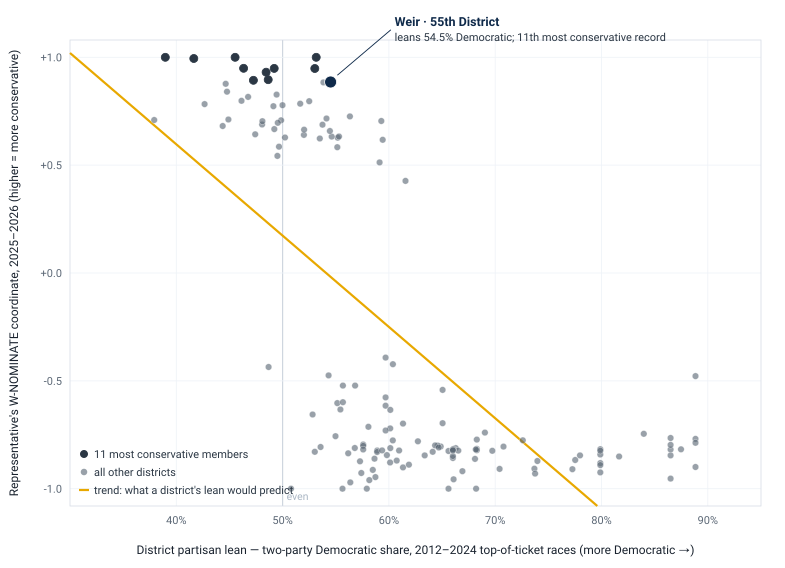

Connecticut's 55th House District · Voting record 2023–2026 · Where Rep. Steve Weir falls on the ideological spectrum of the House, and how the 55th's lean compares
A personal report by Scott Sauyet · scott@sauyet.com · Not an official town document
Methodology: This report places Connecticut House members on a single left-right scale using W-NOMINATE, a standard spatial method that infers each member’s position from the pattern of their recorded roll-call votes. No position is assigned by hand; the scale emerges from who votes with whom. The scaling covers the 2025-2026 term, and for comparison the 2023-2024 term, using all contested House roll calls published by the Connecticut General Assembly. The result is a relative ordering within the chamber, not an absolute or cross-state score. Each district’s partisan lean is a recency-weighted, turnout-weighted average of its towns’ two-party vote for President, U.S. Senate, U.S. House, and Governor across the nineteen general elections from 2012 to 2024, aggregated from towns to districts by each town’s share of the district’s 2020 census population (via the Missouri Census Data Center’s GEOCORR engine) and cross-checked against each town’s share of 2024 State House turnout; the two weightings agree to a correlation of 0.997. For towns split between districts, a town’s lean is assumed uniform across its parts. All sources are linked below, and the data inputs, outputs, and R source are bundled with this report.
Introduction
This report answers a narrow, factual question: relative to the other members of the Connecticut House of Representatives, how conservatively does Rep. Steve Weir (R, 55th District) vote, and how does that compare to the partisan lean of the district he represents?
Two measurements are combined. The first places every member of the House on a single liberal-to-conservative scale built only from their recorded votes. The second estimates the partisan lean of every district from a dozen years of election returns. Putting the two side by side shows both where Weir sits among his colleagues and how that compares to where his district sits among all 151.
The findings are stable across both of Weir’s terms: he votes among the most conservative members of the House, to the right of his own party’s leader, while the 55th District leans Democratic in statewide and federal elections. This report documents those numbers and the method behind them. It does not address why he votes as he does, and it draws no conclusion about whether his record and his district are appropriately matched; those are questions for readers and candidates, not for a data report.
Background
The scale used here is W-NOMINATE, the standard tool political scientists use to locate legislators on an ideological spectrum from their votes. The method makes no assumption in advance about which member is liberal or conservative. It looks only at the pattern of agreement and disagreement across hundreds of recorded votes: members who vote together repeatedly are placed near each other, and the single dimension that best explains the overall pattern becomes the left-right axis. Each member receives a coordinate, conventionally running from about -1 to +1.
Two points about what the coordinate is, and is not. It is relative: it locates a member within this chamber, for this period, not against any fixed or national yardstick. And it is earned from the hard votes: near-unanimous and lopsided votes carry little information and are set aside, so a member’s position is driven by the contested votes where the chamber actually divided. For the 2025-2026 term that left 285 contested votes among the members scored.
Findings
Of the 153 representatives who served in the 2025-2026 term and cast enough recorded votes to be placed, Weir ranks 11th most conservative — inside the most conservative seven percent of the chamber. His position is essentially unchanged from the prior term: in 2023-2024 he ranked 9th of 154, also inside the top six percent. Across both terms he sits at the right edge of the House.
He also votes to the right of his own caucus’s leadership. House Minority Leader Vincent Candelora ranks 19th; Weir ranks 11th, more conservative than the leader of the House Republicans. The same was true in the prior term, when Candelora ranked 28th and Weir 9th.
Within the Republican caucus itself, Weir is not in the middle. Of the 49 Republicans placed in the current term, he is the 11th most conservative, roughly the top fifth of the caucus, and well to the right of the Republican caucus median. His nearest neighbors on the scale are Reps. Vail, Anderson, DeCaprio, and Canino.
Analysis
The partisan lean of each district is estimated from how its towns actually voted for President, U.S. Senate, U.S. House, and Governor over the 2012-2024 period, with more recent elections weighted more heavily. By that measure the 55th District leans Democratic, with a two-party Democratic share of about 54.5 percent, roughly a nine-point Democratic edge in top-of-the-ticket races. Among the 151 districts, 45 are more Republican-leaning than the 55th and 105 are more Democratic-leaning; the 55th sits on the Democratic-leaning side of the midpoint.
Plotting all 151 districts shows the expected pattern: more Republican-leaning districts tend to elect more conservative members. But the relationship is loose, and the 55th is one of the clearer departures from it. Weir votes as one of the most conservative members of the House while representing a district that leans Democratic at the top of the ticket.

Each dot is one of the 151 districts. The horizontal axis is the district’s partisan lean; the vertical axis is the representative’s W-NOMINATE coordinate, with the raw scale shown. Weir sits in the lower-right: a conservative voting record in a Democratic-leaning district.
Weir is not unique in this. About twenty Republicans hold seats that lean Democratic in top-of-the-ticket voting, which is in part simply what it means to be a Republican in a Democratic-leaning state. What distinguishes the 55th is the combination: among those Republicans in Democratic-leaning seats, only two (Reps. Fishbein and Pavalock-D’Amato) have more conservative voting records than Weir. Measured as the distance between a member’s record and what their district’s lean would predict, the 55th is among the three or four widest gaps in the House.
At a glance
| Measure | Value |
|---|---|
| Weir’s rank among all members, 2025-2026 | 11th most conservative of 153 |
| Weir’s rank among all members, 2023-2024 | 9th most conservative of 154 |
| Weir’s rank within the Republican caucus, 2025-26 | 11th of 49 |
| Weir vs. the House Minority Leader (Candelora) | More conservative (11th vs. 19th) |
| 55th District two-party Democratic share | ~54.5% (about D+9) |
| Districts more Republican-leaning than the 55th | 45 of 151 |
| Republicans in Democratic-leaning seats more | 2 (Fishbein, Pavalock-D’Amato) |
| conservative than Weir |
Analysis
Weir’s record is consistently among the most conservative in the House. He ranks 11th of 153 in the current term and 9th of 154 in the prior one — the same position in any meaningful sense, at the right edge of the chamber, across both terms he has served.
He votes to the right of his own party’s leadership. The House Minority Leader ranks 19th; Weir ranks 11th. This is a statement about voting records, not about formal roles.
The 55th District leans Democratic in top-of-the-ticket elections. Over 2012-2024 its towns gave Democrats roughly 54.5 percent of the two-party vote for President, Senate, U.S. House, and Governor. The district nonetheless re-elects a Republican to the state House, which is a fact about candidate-level voting that this report does not attempt to explain.
The record-to-district gap is wide but not unique. Many Connecticut Republicans represent districts that lean Democratic at the top of the ticket. What sets the 55th apart is that Weir pairs such a district with one of the most conservative voting records of any of them.
Caveats
Documentation
wnominate R package
(CRAN)pscl R package (rollcall objects, IRT ideal
points)Reproducibility
Every input and output behind this report is included in this folder so the analysis can be reproduced or audited. The scaling was run in R; the data preparation and aggregation in Python and Node.
scale-ct-house.R — the R script that scales the vote
matrix and ranks membersct-house-2025-2026-votematrix.csv —
current-term roll-call matrix (input)ct-house-2023-2024-votematrix.csv —
prior-term roll-call matrix (input)ct-house-party-roster.csv — member-to-party
roster (input)ct-house-conservatism-ranking-25-26.csv
— current-term ranking (output)ct-house-conservatism-ranking-23-24.csv
— prior-term ranking (output)district-lean-vs-conservatism.csv —
merged district lean and ranking (output)geocorr-town-to-district.csv —
town-to-district population crosswalk (input)weir-position-chart.svg — the chart aboveDownload
This report is available in three formats, all located alongside this page:
{kind=link}